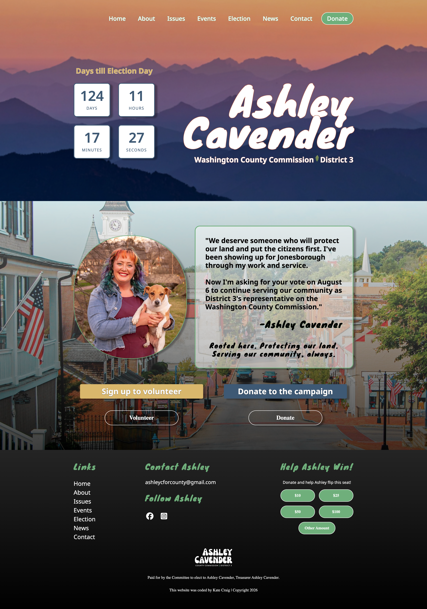
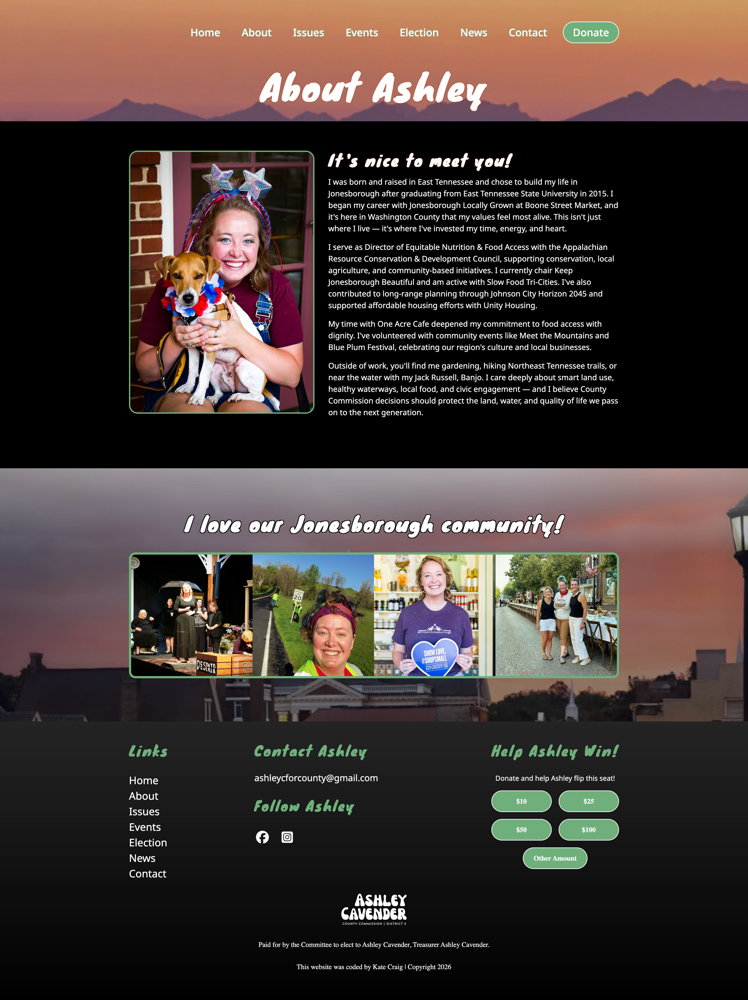
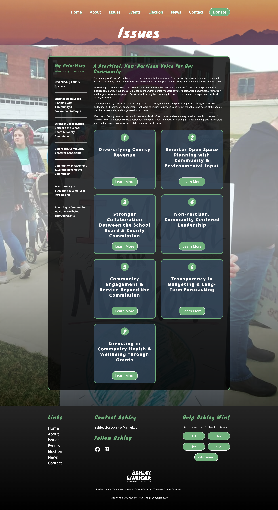
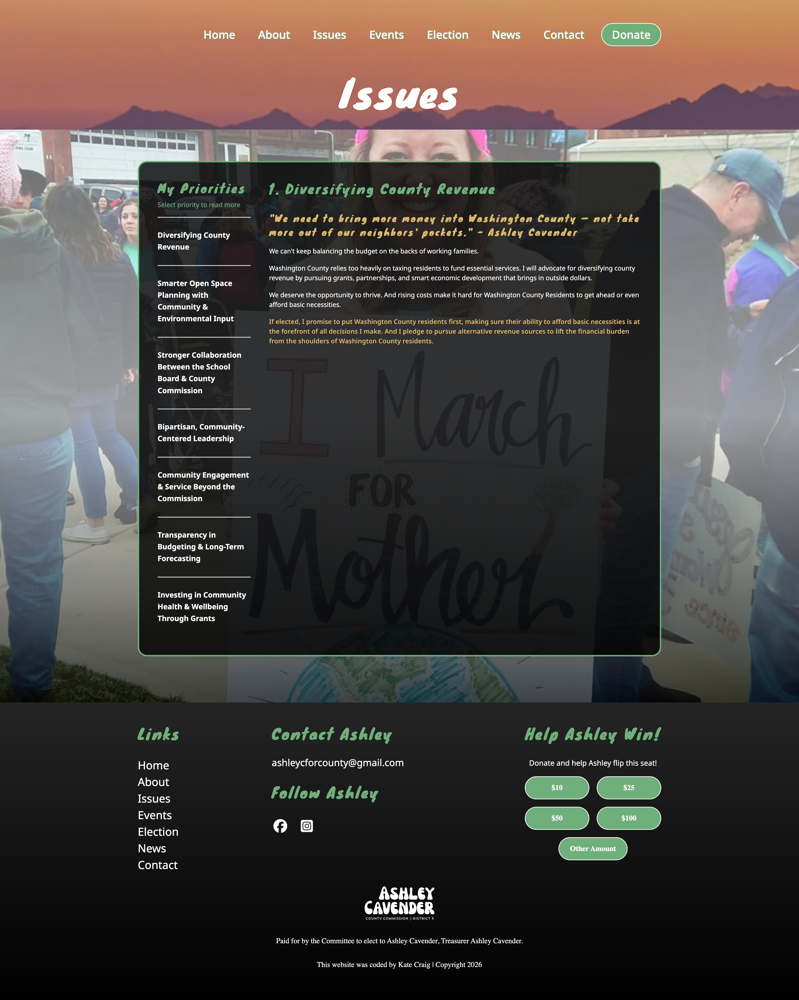
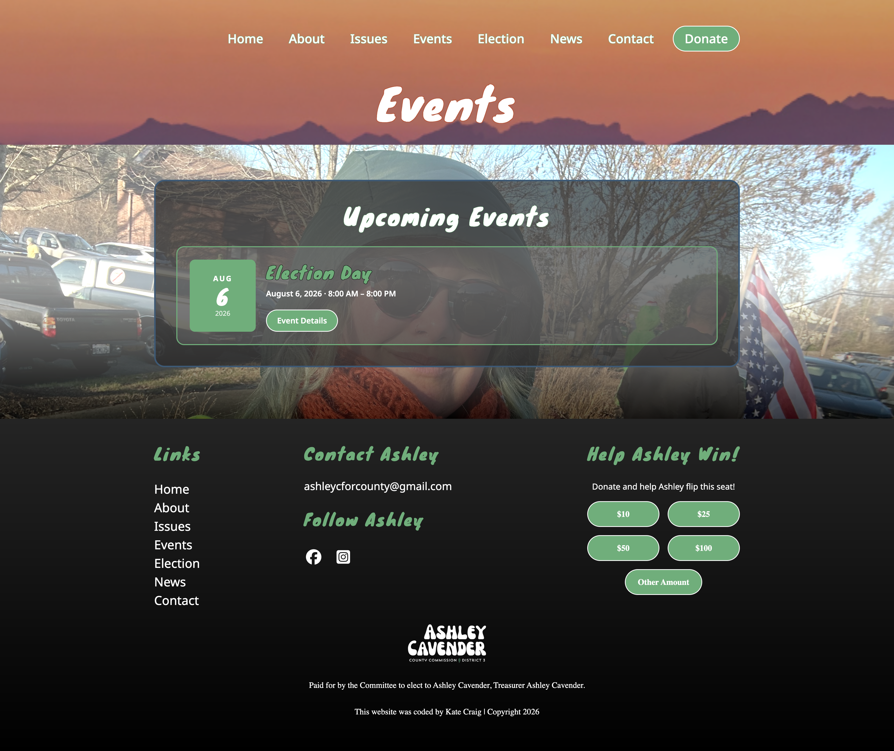
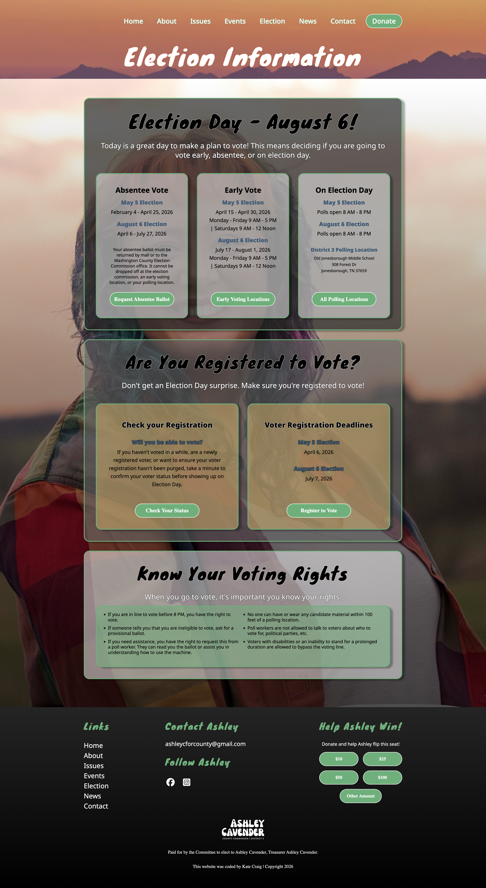
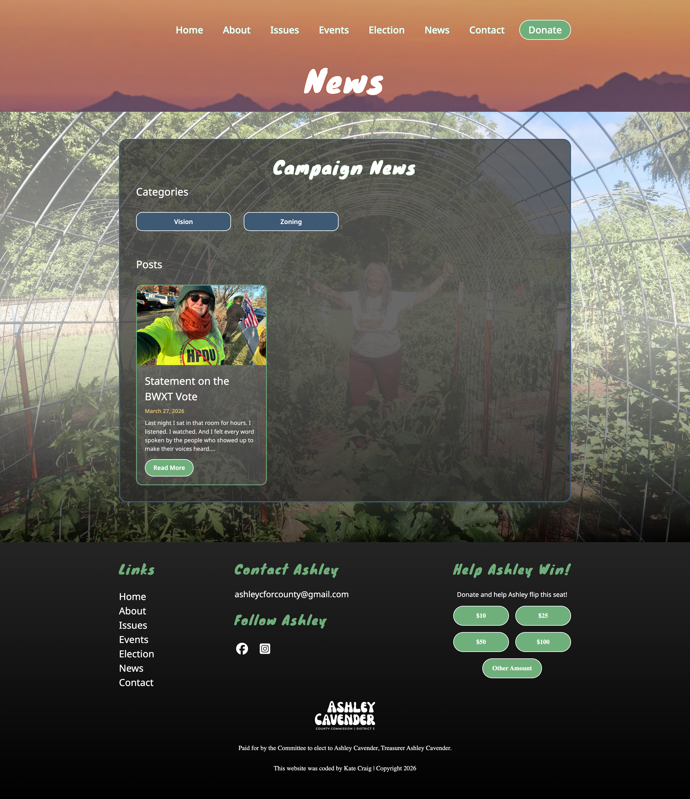
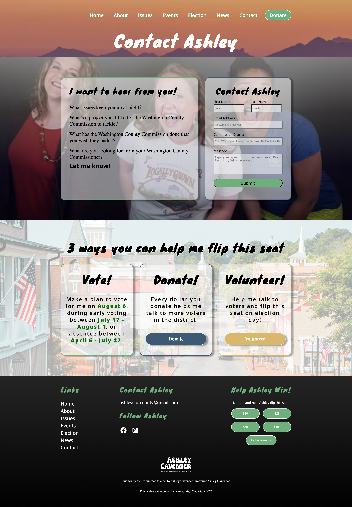

I designed and developed a custom WordPress theme for Ashley Cavender's Website Project. I first designed and developer her site in HTML, CSS, and Javascript, hosting it on Netlify. This included building a custom countdown clock for her August 6, 2026 Election Day. After receiving approval from the client, I rewrote the code in PHP and created a custom WordPress theme, which included custom news and event pages. The News page is the blog page that posts upload to. And the Events page utilizes a free events plugin. All pages are mobile responsive and designed for voters, volunteers, and donors to easily navigate.








